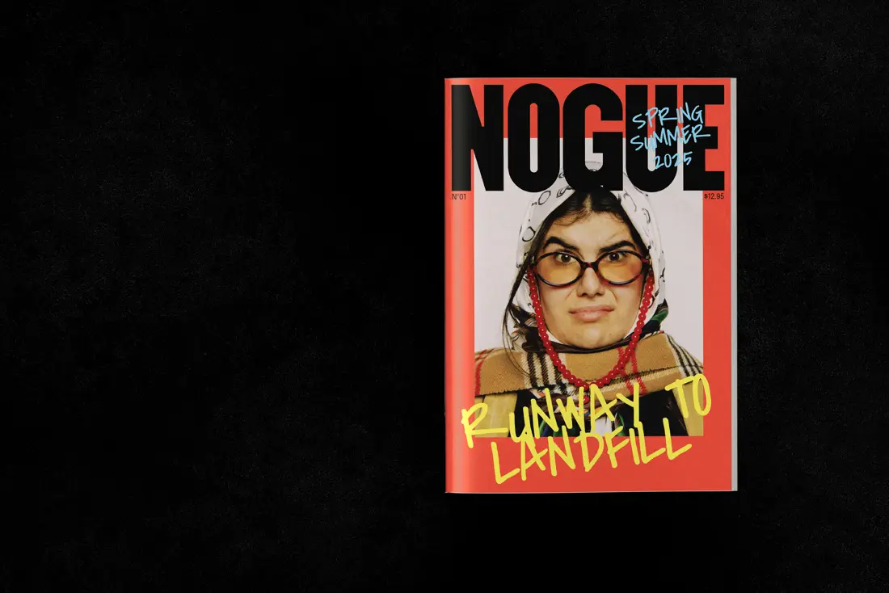
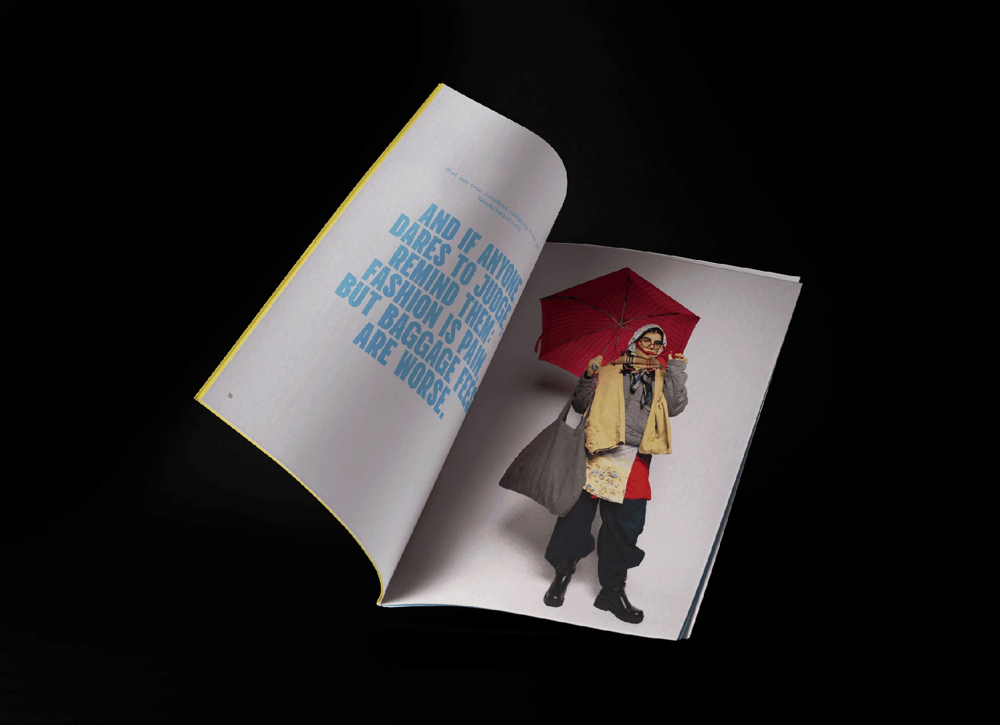
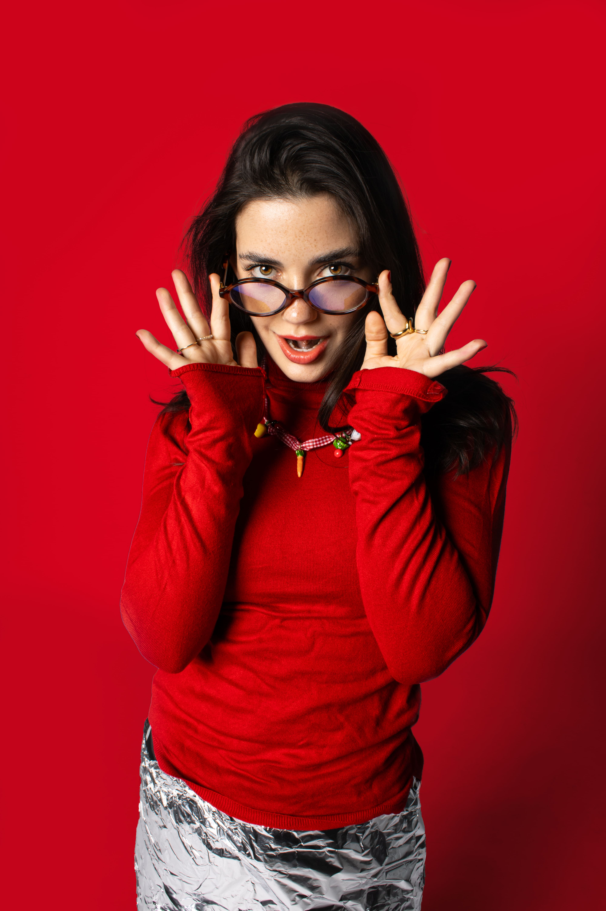
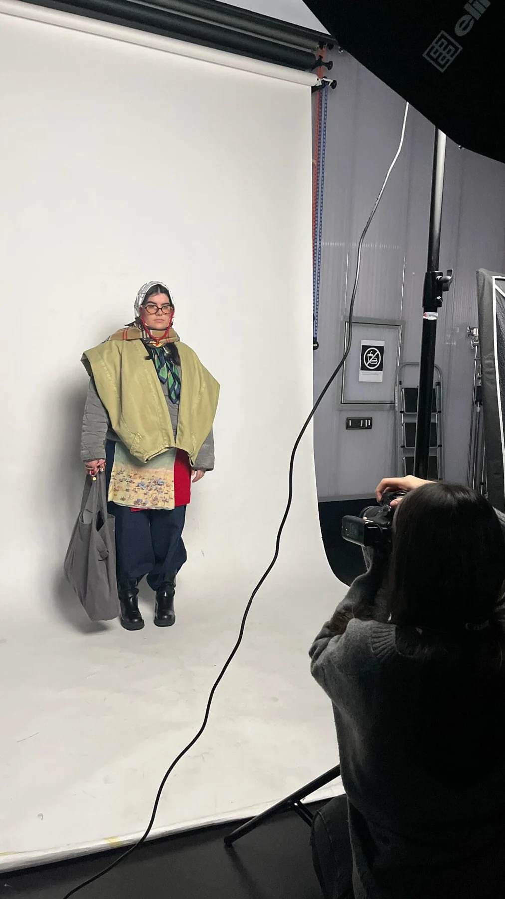
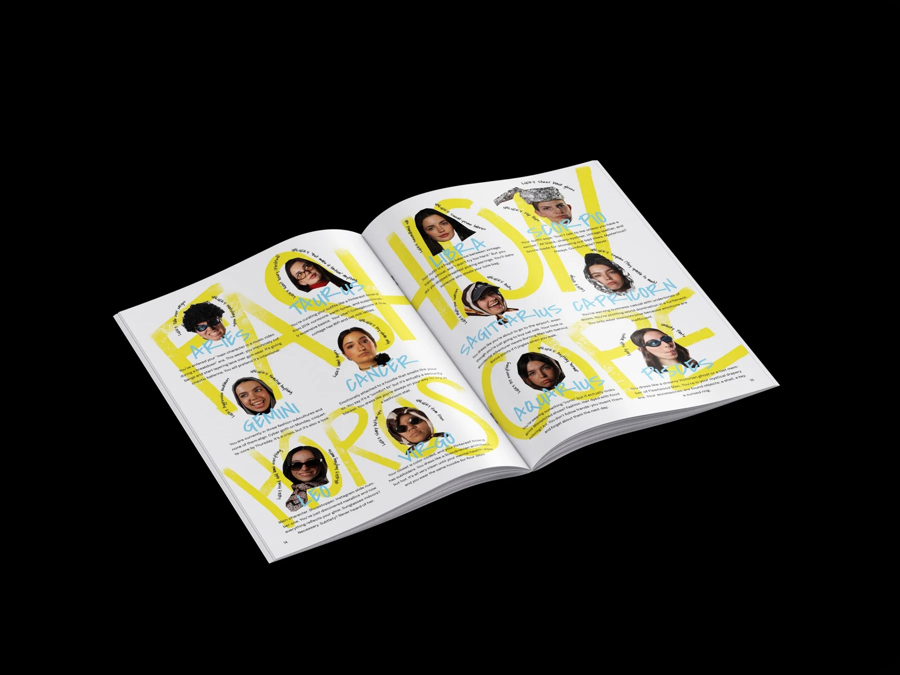
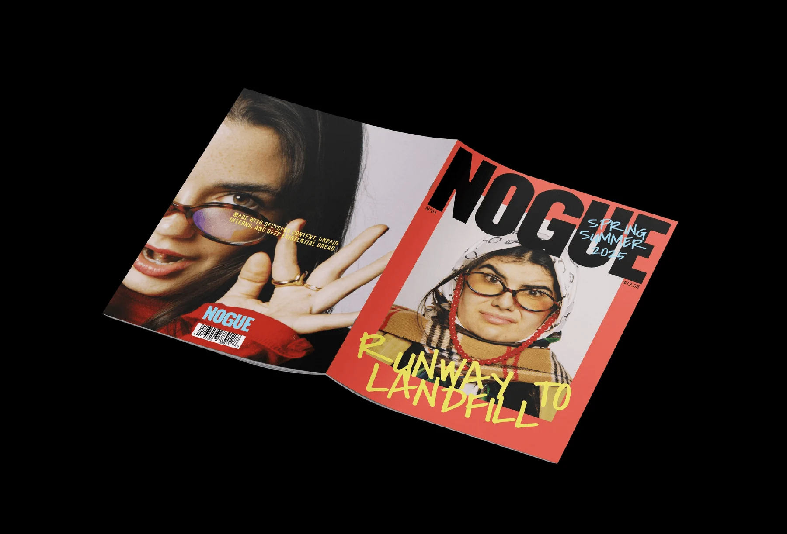

DISEÑO EDITORIAL01 / 05
NOGUE
Revista antifashion (trabajo grupal)
Wireframes, Identidad Visual y Dirección Creativa
Proyecto académico desarrollado para el curso de Diseño Editorial. NOGUE es una revista satírica que critica la moda y la cultura del consumo a través de la parodia, la fotografía y un diseño gráfico audaz. Creamos todo el contenido —incluyendo visuales, maquetación y dirección de arte— con una estética inspirada en el hazlo tú mismo (DIY).





